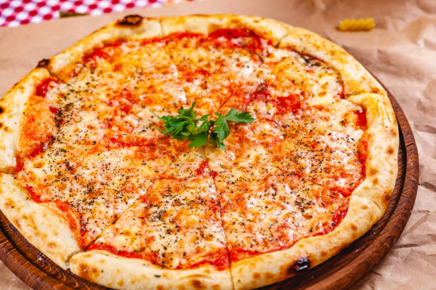

Pizza Margherita

Margherita pizza gets its name from Queen Margherita of Savoy, who was the Queen consort of Umberto I. It was once during her visit to Naples that the dish came into being. The story goes that the Queen was tired of eating French food all the time, as it was the cuisine of choice among the European royalty.
Even a novice cook can master the art of pizza with our simple step-by-step guide. Bellissimo!
Ingredients
- 1 batch easy whole wheat pizza dough or 1 pound store-bought pizza dough
- 1 large can (28 ounces) whole San Marzano tomatoes
- 1 2 ounces (dry weight) ovoline-type mozzarella or other fresh mozzarella balls, ideally water-packed
- Handful of fresh basil, thinly sliced plus small leaves
- Additional garnishes: Drizzle of extra-virgin olive oil, flaky sea salt or kosher salt and optional red pepper flakes
Steps
- Preheat the oven to 500 degrees Fahrenheit with a rack in the upper third of the oven. If you’re using a baking stone or baking steel, place it on the upper rack. Prepare dough through step 5.
- Place a medium mixing bowl in the sink and pour the canned tomatoes into the bowl, juices and all. Crush the tomatoes by hand. Spread about ¾ cup of the tomato sauce evenly over each pizza, leaving about 1 inch bare around the edges.
- If your mozzarella is packed in water, drain off the water and gently pat the mozzarella dry on a clean tea towel or paper towels. If you’re working with large mozzarella balls, tear them into smaller 1-inch balls. Distribute the mozzarella over the pizza, concentrating it a bit more in the center of the pizza, as it will melt toward the edges.
- Bake pizzas individually on the top rack until the crust is golden and the cheese is just turning golden, about 10 to 12 minutes (or significantly less, if you are using a baking stone/steel—keep an eye on it).
- Top each pizza generously with fresh basil, followed by a light back-and-forth drizzle of olive oil, a sprinkling of salt, and red pepper flakes, if you wish. Slice and enjoy. Leftover pizza will keep well in the refrigerator for up to 4 days.